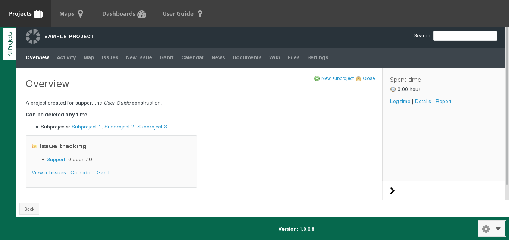
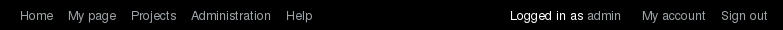

Acessing Redmine on Truffala¶
There are two ways you can direct acess Redmine on Truffala Desktop:
Note
For understand more about Redmine and its capabilities check the Project Management section.
Redmine Frame on Landing Page¶
When you navigate on the Landing Page you can acess your projects trought the Project button. After clicking on the project you want acess, it will open a Redmine Frame as the follow image:
On this frame you’ll be able to do all your daily tasks on the currently project. Examples of tasks could be: create/report issues, organize and assign tasks, acess the gant, upload data and more.
The Entire Redmine Page¶
For some administrative tasks you’ll need to open the entire Redmine page. To open the Redmine on a new tab, right click on a random link on the Redmine frame and choose Open Link in New Tab. As the follow picture:

You can check that the difference between the Redmine Frame and the Entire Redmine Page is the bar at the top of the screen.
Basically the two important links on this bar are Administration and My account. For example you’ll use administration for create projects, create groups, ability plugins and more. And on My account you’ll be able to change your account settings, for example the password.
Note
Check the Project Management section for more information about Redmine.
Warning
TODO: * Project Management section explain about Redmine and its capabilities